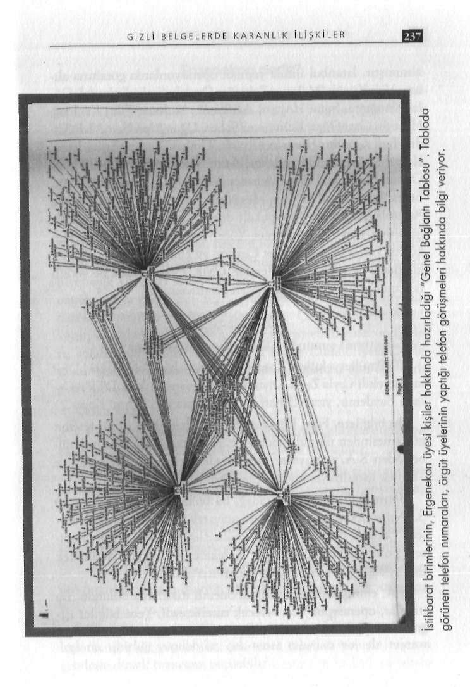

Her ne kadar bomba düzeneği, PKK'yı çağrıştırsa da bu kadar acemilik yapacağını düşünmek çok zor. Geliştirdiğim tez şudur; o bomba, otoparka patlatılmak üzere değil, mesaj vermek üzere yerleştirildi. Bulunması istendiği için bulundu.
Kim mesaj vermek isteyebilirdi?
22 Ocak 2008 günü Ümraniye soruşturması kapsamında ger-
çekleştirilen Ergenekon Operasyonu'nda elde edilecek bilgiler, bu soruya cevap olabilir. Kurtuluş otoparkındaki bomba düzene
ALTIN VURUŞ ERGENEKON
ğinden Ergenekon çıkarsa hiç kimse için sürpriz olmamalıdır.
Nitekim soruşturmayı yürüten savcılığın bu ihtimal üzerinde de yoğunlaşması, önemli bir işarettir.
www.cizgiliforum.com
Ümraniye soruşturması, Bursa ve Eskişehir'deki baskınlarda elde edilen bilgi ve belgelerle daha da genişletildi. Girdap Operasyonu'nda ele geçirilen belgelerin de bu sürece çok önemli katkısı oldu. Uzun süredir telefon görüşmeleri, MSN yazışmaları, mail trafiği de yakın takipteydi. Daha da önemlisi, işin başında Susurluk tecrübesi bulunan istanbul Cumhuriyet Başsavcısı Aykut Cengiz Engin vardı. Cengiz Engin, Susurluk soruşturmasında görev almış, özel timci üç polisi sorgulamış ve devlet içindeki derin yapılanma konusunda uzman birisiydi. Bu savcının, soruşturmanın sonuç alıcı noktaya gelmesinde önemli etkisi oldu.
Soruşturma ürkütücü boyutlara ulaşınca, siyasi iradenin desteğine ihtiyaç duyuldu. İstanbul'da Başbakan Erdoğan'la konu hakkında daha önce birkaç kez görüşen Emniyet Müdürü Celalettin Cerrah, operasyondan önce Başbakan'la son bir görüşme daha yaptı. Erdoğan'ın "Ucu nereye uzanıyorsa oraya kadar gidin" talimatı üzerine düğmeye basıldı.
Başbakanın bu talimatı üzerine Cerrah; Terörle Mücadele Şube Müdürü Selim Kutkan ve İstihbarat Şube Müdürü Ali Fuat Yılmazer ile birlikte operasyon planını hazırladı. Operasyonun başlatıldığı 03:00'e kadar tüm bilgiler gizli tutuldu. Operasyona katılan polisler, hareketten kısa süre önce bilgilendirildiler.
İstanbul, Adana, İzmir, Düzce ve Malatya'da eş zamanlı olarak 43 adrese baskın düzenlendi. Gözaltına alınan 35 şüpheli, 24
